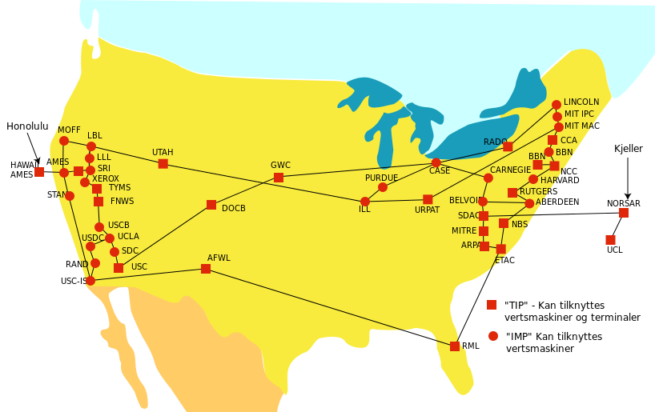

The Advanced Research Projects Agency Network (ARPANET) was an early packet switching network and the first network to implement the protocol suite TCP/IP. Both technologies became the technical foundation of the Internet. ARPANET was initially funded by the Advanced Research Projects Agency (ARPA) of the United States Department of Defense.
The packet switching methodology employed in the ARPANET was based on concepts and designs by Americans Leonard Kleinrock and Paul Baran, British scientist Donald Davies, and Lawrence Roberts. The TCP/IP communications protocols were developed for ARPANET by computer scientists Robert Kahn and Vint Cerf, and incorporated concepts from the French CYCLADES project directed by Louis Pouzin.

Packet switching—today the dominant basis for data communications worldwide—was a new concept at the time of the conception of the ARPANET. Prior to the advent of packet switching, both voice and data communications had been based on the idea of circuit switching, as in the traditional telephone circuit, wherein each telephone call is allocated a dedicated, end to end, electronic connection between the two communicating stations. Such stations might be telephones or computers.
The (temporarily) dedicated line typically comprises many intermediary lines which are assembled into a chain that stretches all the way from the originating station to the destination station. With packet switching, a data system could use a single communication link to communicate with more than one machine by collecting data into datagrams and transmitting these as packets onto the attached network link, as soon as the link becomes idle. Thus, not only can the link be shared, much as a single post box can be used to post letters to different destinations, but each packet can be routed independent of other packets.